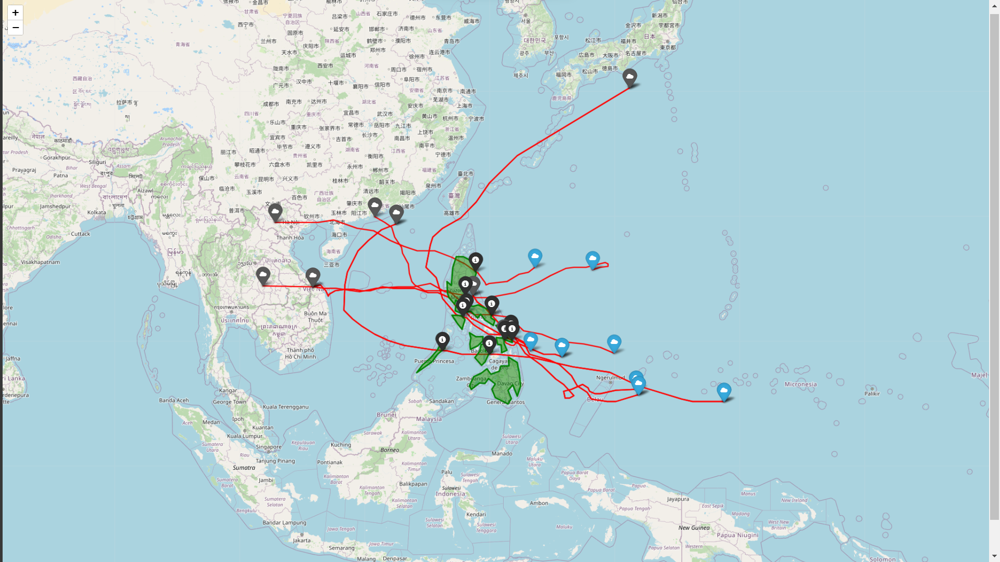

Feature Analysis for Effective Tropical Cyclone Forecasting

This research project focuses on improving the accuracy of tropical cyclone forecasting by analyzing key meteorological features and applying advanced machine learning models. By utilizing datasets from the RSMC (Japan Meteorological Agency) and the Tropical Cyclone Indian dataset from Kaggle, the study compared the performance of Random Forest, Deep Neural Networks (DNN), and Long Short-Term Memory (LSTM) models. The research aimed to forecast critical parameters such as cyclone landfall location, arrival time, and intensity. Feature analysis revealed the significance of direction-related attributes, which substantially improved the model’s predictive performance.
Challenges:
- Dataset Quality and Completeness:
- The RSMC dataset had significant missing data in critical attributes such as wind speeds, which limited model accuracy.
- Balancing the trade-off between data completeness and feature richness was crucial for effective forecasting.
- Feature Selection and Integration:
- Determining the most critical predictors (e.g., SST, MSSW, and direction features) required extensive analysis and model iterations.
- Integrating additional features without compromising data quality posed a technical challenge.
- Model Comparisons and Optimizations:
- While Random Forest outperformed other models, MLP (Multilayer Perceptron) lagged in generalization capabilities.
- Optimizing LSTM for temporal data while managing computational resource constraints was challenging.
Learnings:
- Feature Importance:
- Direction-related attributes and supplementary features like SST and MSSW significantly enhanced forecasting accuracy, demonstrating the importance of enriched datasets.
- Excluding incomplete attributes from the RSMC dataset improved model performance.
- Algorithm Performance:
- Random Forest emerged as the most reliable model for cyclone path prediction, particularly with additional features.
- Deep learning models like LSTM showed potential for further enhancements in temporal forecasting accuracy when combined with enriched datasets.
- Practical Applications:
- Visualizations, such as graphs comparing predicted and actual landfall data, improved interpretability and usability for disaster management purposes.
- Incorporating a robust feature selection strategy can lead to near-zero error margins, as evidenced by the reduction of RMSE and MAE to 0.80 with optimized features.
Conclusion:
This project highlights the potential of machine learning in tropical cyclone forecasting, particularly through advanced feature analysis and integration of enriched meteorological datasets. By addressing limitations in traditional forecasting approaches, the study provides a foundation for further improvements in disaster preparedness and risk mitigation strategies. Future work includes integrating user management systems for broader application and refining LSTM models for enhanced temporal accuracy.